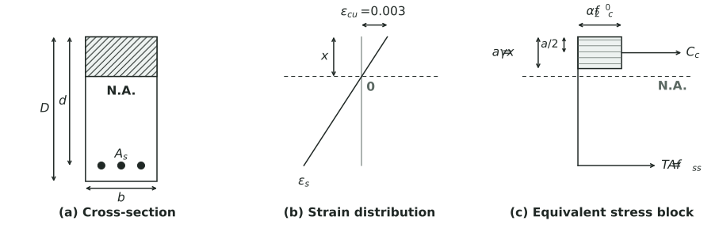
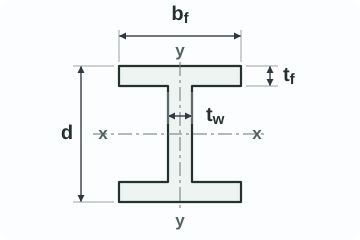
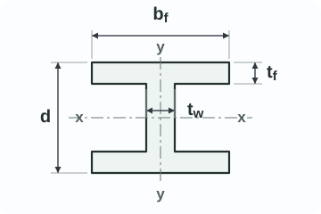

φVf · threads intercept plane · AS 4100 Cl. 9.2.2.1
Engineering quick reference
Clear inputs, concise results, traceable references.
Bolted connections · AS 4100 Cl. 9.2
Bolt Capacity
Drawing calloutM24 8.8/SN: threads intercept shear plane · X: threads clear of shear plane
- df
- 24 mm
- As
- 353 mm²
- Ac
- 324 mm²
- Ao
- 452 mm²
- fuf
- 830 MPa
df nominal bolt diameterAs tensile stress areaAc minor diameter areaAo nominal plain-shank areafuf bolt tensile strength
/S snug-tight/TB fully tensioned, bearing-type/TF fully tensioned, friction-typeN threads intercept shear planeX threads clear of shear plane
RESULTS
per boltBolt capacity
φNtf · AS 4100 Cl. 9.2.2.2
threads clear of plane
One shear plane; krd = 1.00; kr = 1.00 default. Adjust kr only for bolted lap connections requiring AS 4100 Cl. 9.2.2.1 reduction.
RESULTSDetailed connection checksBolt group, shear planes, ply bearing, TF slip and combined actions+
Bolt group and shear planes
Design shear capacity of bolt group133.4 kN1 bolt × 1 N plane per bolt = 1 total shear plane.
Connected ply - bearing, edge tear-out and minimum edge distance
Ply bearing limit · group283.4 kN1 × φ(3.2dftpfup)
Edge tear-out limit · group151.3 kN1 × φ(aetpfup)
Governing ply capacity151.3 kNedge limit controls
Minimum edge distance, e - AS 4100 Table 9.5.2 / mm requiredPASSFor edge-limited bearing: ae = e/cosθ - dh/2 + df/2 = mm. Edge-line bolts default to total bolts unless manually adjusted.
TF slip resistance
Design slip resistance per boltNot applicableTF categories only
Combined shear and tension
Governing capacity check—Enter design actions
Enter design actions to identify whether bolt shear, bolt tension, combined bolt interaction or connected ply governs.
Warning: include any prying force in bolt tensile action where applicable; refer AS 4100 Cl. 9.1.8. TF categories also require the separate serviceability slip interaction in AS 4100 Cl. 9.2.3.3.
Checklists / warnings
Verify block shear for coped beams, gussets and locally reduced plates; refer AS 4100 Cl. 9.1.9. Keep kr = 1.0 unless the actual detail is a bolted lap connection requiring AS 4100 Cl. 9.2.2.1 reduction. This quick lookup applies the entered kr, but does not auto-derive it from the connection length or hole layout.
Calculation basis and limitationsEquations, AS 4100 references and data boundaries+
Issue status · For Review. Clause pages for AS 4100 bolt shear, tension, combined shear-tension and bearing checks have been visually checked against the local reference PDF; product table values still require project-specific source-register traceability before `Checked` release.
Primary basis · AS 4100 Table 3.4; AS 4100 Cl. 9.1.8, AS 4100 Cl. 9.2.2.1, AS 4100 Cl. 9.2.2.2, AS 4100 Cl. 9.2.2.3, AS 4100 Cl. 9.2.2.4, AS 4100 Cl. 9.2.3.1, AS 4100 Cl. 9.2.3.3 and AS 4100 Cl. 9.5.2.
Material standards · Connected ply strengths should be verified against AS/NZS 3678 or AS/NZS 3679.1 as applicable. The default fup = 410 MPa is for AS/NZS 3678 Grade 250 plate from ASI Simple Connections 2020 Table 2.15; use 440 MPa only for a verified AS/NZS 3679.1 Grade 300 flat bar/section or equivalent source. Fastener property class and structural bolt assemblies should be verified against AS 1110 and AS/NZS 1252 as applicable.
Symbols · df is the nominal bolt diameter; dh is the actual hole diameter; e is the hole-centre edge distance used for AS 4100 Table 9.5.2; Ao is the nominal plain-shank area; Ac is the minor diameter area; As is the tensile stress area.
N/X and category · `/S`, `/TB` and `/TF` identify installation and connection category. N or X identifies the shear plane condition and is selected separately; TB is not inherently N or X.
Edge notation · The minimum edge-distance check uses e, measured from hole centre to ply edge. The edge-limited bearing check uses ae for AS 4100 Cl. 9.2.2.4(2), calculated here as e/cosθ - dh/2 + df/2 for a standard hole at a physical ply edge, where θ is measured from the edge normal to the force direction. Use Bolts on edge line for bolts on the loaded edge or critical line only. Where the critical edge is an adjacent bolt hole, determine ae from the actual hole layout rather than total bolt count.
Demand checks · Shear-only demand checks AS 4100 Cl. 9.2.2.1 for the bolt and AS 4100 Cl. 9.2.2.4 for the connected ply. Tension-only demand checks AS 4100 Cl. 9.2.2.2. Combined shear and tension checks AS 4100 Cl. 9.2.2.3 for the bolt, while the connected-ply bearing / edge tear-out check remains separate.
Minimum edge distance assumes a standard hole measured from hole centre to ply edge. Enter the actual hole diameter used to derive ae. Non-standard holes require the measurement convention in AS 4100 Cl. 9.5.2(b).
Topology-dependent checks such as prying action, block shear, coped-beam tearing and gusset tear-out are not calculated by this quick-reference tool and must be checked from the actual connection geometry. The entered kr is applied to AS 4100 Cl. 9.2.2.1 bolt shear capacity, but the tool does not auto-derive kr from bolted lap connection geometry.
AS 4100 Table 15.2.2.2 gives minimum bolt tensions only for M16 to M36. Accordingly, M10 and M12 are available only in /S categories in this tool.
As and Ac use metric coarse-thread data. Verify against the applicable fastener and thread Standards before issue for design.
Welded connections · AS 4100 Cl. 9.6
Weld Capacity
Drawing callout6 mm CFW, category SP, fuw 490 MPaShow weld type, size or throat, category and nominal weld metal strength on drawings.
- type
- Fillet
- tt
- 4.24 mm
- lw
- 100 mm
- lines
- 2
- φ
- 0.80
s fillet weld leg sizett design throat thicknessaw specified butt-weld throatlw effective weld lengthfuw nominal tensile strength of weld metal
Weld symbol legendSource-based SVG redraw; confirm final symbols to AS 1101.3 and project drawings+
Fillet weld - arrow sideAS 1101.3 Cl. 2.3.2.1: place the weld symbol on the side of the reference line towards the reader.
Fillet weld - other sideAS 1101.3 Cl. 2.3.2.2: place the weld symbol on the side of the reference line away from the reader.
Fillet weld - both sidesAS 1101.3 Cl. 2.3.2.3: place weld symbols on both sides of the reference line, towards and away from the reader.
Complete penetration butt weldCallout example only. AS 1101.3 places specification, procedure, process or other reference in the tail where used.
Square butt weldBasic butt-weld symbol from AS 1101.3 Fig. 2.1, shown on the arrow-side position for this quick legend.
Single-V butt weldBasic V butt-weld symbol from AS 1101.3 Fig. 2.1, shown on the arrow-side position for this quick legend.
Single-bevel butt weldBasic bevel butt-weld symbol from AS 1101.3 Fig. 2.1. Confirm which member is prepared from the project drawing.
Double-V butt weldBoth-side V butt-weld indication using the AS 1101.3 Fig. 2.1 V symbol mirrored across the reference line.
Incomplete penetration butt weldCallout example only. Specify the effective throat or preparation depth separately where required by design.
SVG redrawn as a visual guide from AS 1101.3:2005 Figs 2.1 and 2.8-2.10 for common structural-steel weld symbols only. AS 1101.3 describes arrow-side symbols as being on the side of the reference line towards the reader, other-side symbols as away from the reader, and both-side welds as symbols on both sides of the reference line. Weld size, length, pitch, process, contour, finish, weld category such as SP/GP, WPS and inspection notes must be specified separately on project drawings where required.
Weld selection guideScenario-first defaults and limits+
AS 4100 Cl. 9.6AS 4100 Table 9.6.3.10AS/NZS 1554.1 WPS / inspectionASI Simple Connections Fig. 2.7
RESULTS
selected weld typeWeld capacity
φ0.6fuwttkr
per-mm value × lw × lines
warning only
Warning-only parent metal / lap inputsUse only when the parent-metal screen or welded-lap reduction is relevant.+
Weld utilisation ratio0.00Enter design action
Capacity view only; not a full weld or joint design check. Parent metal, HAZ, eccentric weld groups, fatigue and inspection remain project checks.
Calculation detailsFormula steps and parent-metal per-mm screen+
Calculation steps
Calculation basis and limitationsAS 4100, AS/NZS 1554.1 and industry guidance+
Issue status - For Review. Formula basis is shown, but weld-symbol redraws and product/process assumptions remain project-drawing dependent.
Primary basis - AS 4100 Cl. 9.6 welded connections; fillet-weld throat-area capacity is calculated as φR = φ0.6fuwttlwkr. AS 4100 Table 3.4 gives φ = 0.90 for SP CPBW, φ = 0.80 for SP other fillet weld / IPBW and φ = 0.60 for GP. This tool does not include the AS 4100 Table 3.4 special case φ = 0.70 for longitudinal fillet welds in RHS where t < 3 mm.
Weld metal strength - AS 4100 Table 9.6.3.10(A), also summarised in ASI Simple Connections 2020 Table 2.14. Common strengths shown here are 430, 490 and 550 MPa.
Weld category - SP/GP is included in the drawing callout and capacity calculation where AS 4100 Table 3.4 gives different capacity factors. CPBW, IPBW and compound selections still require project-specific effective throat, joint preparation, WPS, inspection and acceptance confirmation.
Effective weld lines - use 2 only for two identical effective weld lines acting together, such as both sides of a plate. It is not the number of welding passes.
Lap connection reduction - kr comes from AS 4100 Table 9.6.3.10(B) for a welded lap connection. In that table lw is in metres: kr = 1.00 for lw ≤ 1.7 m, kr = 1.10 - 0.06lw for 1.7 < lw ≤ 8.0 m, and kr = 0.62 for lw > 8.0 m. This quick tool applies it only when the welded-lap option is selected.
Parent metal screen - indicative per-mm parent metal shear capacity is shown as φ0.6fupt using φ = 0.90 and AS/NZS 3678 / AS/NZS 3679.1 tensile strengths summarised in ASI Simple Connections 2020 Tables 2.15 and 2.16. It is warning-only and does not replace a connected-part check.
Welding process - process selection should be by the fabricator under a qualified WPS to AS/NZS 1554.1.
Symbols - welding symbols are shown in the AS 1101.3 style: the basic weld symbol below the reference line indicates arrow-side weld; above the line indicates other-side weld. Verify exact drawing symbols, preparations and inspection category to AS/NZS 1554.1 on the project drawings.
Scope - selected weld-type throat-capacity lookup under direct action: equal-leg fillet, CPBW, IPBW, or compound weld using user-entered effective length, effective weld lines and aw where relevant.
Design boundary - this is not a full weld or joint design check. CPBW, IPBW and compound options are capacity views only, not full joint checks. Parent-metal screen is not a tear-out, block shear, net-section, HAZ or eccentric weld group check. Plug / slot welds, weld groups, longitudinal RHS fillet welds where t < 3 mm, parent-metal rupture, HAZ, joint preparation, backing/gouging, eccentric weld groups, intermittent weld rules, fatigue, seismic detailing, lamellar tearing and inspection acceptance criteria are excluded.
Concrete pads · AS 3600 section theory
Concrete Pad Section
Selected section1000 x 500 mm strip - top compressionNeutral axis solved from internal force equilibrium with concrete tension ignored.
- x
- -
- Cc
- -
- Muo
- -
- φMuo
- -
- status
- -
b section strip widthDtop top pad depthDbot bottom pad depthcnom nominal concrete cover to bar surfaceyi reinforcement mat depth from top faceN/Y16 @ 200 bar designation and spacing
Reo areas use standard nominal Australian bar table areas. One-way shear uses the AS 3600 simplified non-prestressed method; verify the actual design shear plane, detailing and demand separately.
Reinforcement matActiveAuto fill yiDepth yiBar sizeSpacingfsyEs
Top pad top mat
Top pad bottom mat
Bottom pad top mat
Bottom pad bottom mat
Section analysis schematic
strain and stress block+
Section analysis schematic

RESULTS
selected stripSection capacity
Capacity factor is calculated from the selected section state.
Internal force couple after force equilibrium
Concrete contribution only; no shear reinforcement included
measured from selected compression face
Section status--
Moment capacity and one-way shear screen only; verify excluded footing checks separately.
RESULTSDetailed section checksReinforcement mat strains, stresses, forces and force-equilibrium residual+
Reinforcement mat results
Calculation steps
Calculation basis and limitationsAS 3600 section theory and pad design boundary+
Primary basis - reinforced concrete ultimate flexural section analysis using AS 3600-style rectangular stress-block section theory. Stress-block factors, ultimate strain, ductility limits and capacity factor must be checked against AS 3600 before issue for design.
Stress block - α2 and γ are calculated from f'c using α2 = max(0.85 - 0.0015f'c, 0.67) and γ = max(0.97 - 0.0025f'c, 0.67). The f'c input is limited to 20 to 120 MPa.
Capacity factor - for N-class reinforcement in pure bending, this tool calculates φ from kuo using the AS 3600 Table 2.2.2 expression φ = 1.24 - 13kuo/12, limited to 0.65 to 0.85. Legacy Y bars use conservative φ = 0.65 unless actual bar grade and N-class equivalence are verified. Compression-dominant axial-load cases are not implemented.
One-way shear screen - φVu is shown using AS 3600 Cl. 8.2.3.1, Cl. 8.2.4.1 and Cl. 8.2.5.2. For this non-prestressed quick screen, kv and θv use the simplified method in AS 3600 Cl. 8.2.4.3. The rectangular strip assumption gives bv = b; ducts, voids and stepped widths are not modelled.
Ductility limit - where kuo exceeds 0.36, AS 3600 Cl. 8.1.5 imposes additional conditions on analysis, compression reinforcement and restraint; this tool flags the section for engineering review.
Reinforcement basis - Australian N and legacy Y bar designations use standard nominal Australian bar table areas, not raw circular area from bar diameter. Legacy Y bars are provided for old drawings, with default fsy = 410 MPa; verify actual grade, ductility and condition from the original drawings, specifications, supplier certificate or test records. User-entered fsy above 600 MPa is capped at 600 MPa in the design model.
Section theory - plane sections remain plane; strain is linear; concrete tension is ignored at ultimate; ultimate concrete strain is fixed at εcu = 0.0030; steel stress is calculated from strain and capped at yield.
Neutral axis - x is measured from the selected compression face and solved by axial force equilibrium for pure bending with N* = 0.
Scope - rectangular pad strip only. Results are for the selected strip width b; use b = 1000 mm for the usual per-metre capacity.
Plain concrete - if no reinforcement mat is active, this tool does not calculate an RC ultimate moment or reinforced-concrete one-way shear capacity. Use a separate plain-concrete footing check to AS 3600 Section 20 where applicable.
Excluded checks - punching shear, base-plate or column bearing, soil bearing, development length, anchorage, bar spacing, crack control, deflection and load combinations.
Pad-on-pad - Separate pads calculates only the selected pad. Combined section uses Dtop + Dbot and active mats from both pads, and should be used only where composite action and interface shear transfer have been separately designed and documented.
Beam sections · AS 4100 Section 5
Beam Section
Section guideSymbolic UB/UC dimension sketch; not a source of numeric properties+

UBd, bf, tw, tf; x/y axes - OneSteel / InfraBuild basis

UCd, bf, tw, tf; x/y axes - OneSteel / InfraBuild basis
Selected section310UB40.4 - 300PLUSsection-capacity lookup only; not a full beam design check
- mass
- 40.4 kg/m
- Ag
- 5,210 mm²
- Aw
- 1,730 mm²
- fy
- 320 MPa
- Zex
- 633 x 10³ mm³
- class
- Compact
Ms section moment capacityVv section shear capacityAw web shear areaZex effective section modulus about selected axisSx plastic section modulusZx elastic section modulusfy yield stress used for section capacity
RESULTS
φ = 0.90Beam section capacity
AS 4100 Cl. 5.2 using Zex
AS 4100 Cl. 5.11 using Aw
φfySx
Sx633 x 10³ mm³
Zx569 x 10³ mm³
Aw1,730 mm²
kf0.952
CompactnessCompact
Capacity basisCatalogue Zex and Aw
Section utilisation ratio0.00Enter design actions
Section-capacity lookup only. Catalogue web shear includes the lightweight AS 4100 Cl. 5.11 unstiffened-web screen; verify member capacity, lateral restraint, web bearing, concentrated loads, deflection and combined actions separately.
Calculation stepsSection properties, compactness, moment and shear-capacity calculation+
Calculation steps
Calculation basis and limitationsAS 4100 section capacity and OneSteel / InfraBuild UB/UC data+
Issue status - For Review. This tab is limited to selected UB and UC catalogue entries plus Custom input.
Primary basis - AS 4100 Section 5 beam design. Section moment capacity is taken as φMs = φfyZe under AS 4100 Cl. 5.2 for the selected bending axis. Web shear starts from AS 4100 Cl. 5.11.4, Vw = 0.6fyAw; catalogue UB/UC rows then apply the lightweight AS 4100 Cl. 5.11.5 unstiffened-web screen using d1/tw. AS 4100 Cl. 5.12 is treated as the shear-bending interaction review where bending is present.
Product data - OneSteel / InfraBuild Hot Rolled Products Catalogue, 9th edition, selected Universal Beams and Universal Columns section properties, dimensions and section-capacity table values for 300PLUS and Grade 350.
Effective modulus - for catalogue UB/UC sections, Zex, compactness and kf are taken from the catalogue table rather than recalculated from plate slenderness in the browser. Aw is calculated from catalogue d1 and tw. Custom sections use user-entered properties.
Scope - section-capacity lookup only: major-axis section moment capacity and major-axis web shear capacity for selected hot-rolled UB and UC catalogue sections, plus user-entered custom section properties. Other section families are not included in this Beam Section tab.
Custom section - the user is responsible for the entered fy, Zex, Sx, Zx, Aw, compactness and material/product basis. Custom input is not catalogue-verified and does not derive web slenderness, stiffener conditions, shear buckling reduction or non-uniform shear stress distribution.
Design boundary - this is not a full beam design check. Member moment capacity Mb, lateral-torsional buckling, restraint spacing, minor-axis bending, biaxial bending, axial interaction, web bearing, web buckling, stiffeners, concentrated loads, cope effects, holes, composite action, fire, deflection and vibration are excluded.
Use - treat this as the first section-capacity lookup before completing the project-specific beam checks required by AS 4100. Where V* exceeds 0.60φVv, treat the output as CHECK unless bending is confirmed absent; where bending is present, complete AS 4100 Cl. 5.12 shear-bending interaction review before design issue and do not adopt the unreduced φMs as the final pass value.
Axial members · AS 4100 Sections 6 and 7
Axial Member Capacity
Section guideProduct-catalogue style dimension sketches+

CHSD, t · Orrcon catalogue / AS/NZS 1163 basis

Equal Angleb, t, r · OneSteel / InfraBuild Tables 19-21

PFCd, bf, tw, tf, r · OneSteel / InfraBuild Tables 15-16

Rodd · OneSteel / InfraBuild Table 3
Custom / Built-upUser-entered effective properties. Axial capacity only.
AS 4100 factor lookupQuick guides for r, kf, αb and kt; An and Le remain project inputs+
αb member section constant guide
| Member case | Use this value when | αb | Status |
|---|---|---|---|
| CHS | Cold-formed, non-stress-relieved CHS. | -0.5 | AS 4100 Table 6.3.3(A) or (B), CHS row selected by kf. |
| PFC | Hot-rolled channel with kf = 1.0. | 0.5 | AS 4100 Table 6.3.3(A), hot-rolled channels. |
| Equal Angle | Angle with kf = 1.0. | 0.5 | AS 4100 Table 6.3.3(A), angles. |
| Equal Angle | Angle with kf < 1.0. | 1.0 | AS 4100 Table 6.3.3(B), other sections not listed. |
| Rod | Solid circular rod with kf = 1.0. | 0.5 | AS 4100 Table 6.3.3(A), other sections not listed. |
kf form factor guide
| Member case | kf used | Source / basis |
|---|---|---|
| CHS | 1.000 | AS 4100 Cl. 6.2.2, Ae = Ag for this quick CHS geometry screen. |
| PFC | 1.000 | OneSteel / InfraBuild Tables 15–16, form factor row. |
| Equal Angle | catalogue value | OneSteel / InfraBuild Tables 19–21, form factor row; some thin angles are below 1.0. |
| Rod | 1.000 | AS 4100 Cl. 6.2.2, solid round geometry with Ae = Ag. |
kt tension correction guide
| Tension connection case | Use this value when | kt | Status |
|---|---|---|---|
| Uniform force distribution | End connection satisfies AS 4100 Cl. 7.3.1. | 1.00 | AS 4100 Cl. 7.3.1. |
| Angle, one leg connected | Table case (a); use 0.75 only for unequal angle connected by the short leg. | 0.85 | AS 4100 Table 7.3.2. |
| Unequal Angle, short leg connected | Table case (a), unequal angle connected by the short leg. | 0.75 | AS 4100 Table 7.3.2. |
| Channel / tee eccentric cases | Use the matching Table 7.3.2 configuration case. | 0.85 / 0.90 / 1.00 | AS 4100 Table 7.3.2. |
Custom section dimensionsOptional geometry override for the selected CHS / EA / PFC / Rod family.
Catalogue data is currently used. Custom geometry keeps the same AS 4100 axial member calculation flow.
αb = -0.5 assumed cold-formed non-stress-relieved CHS.
Selected member—Calculated after selection
- Dimensions
- —
- Ag
- —
- rx
- —
- ry
- —
- r used
- —
- Ix = Iy
- —
- fy
- —
- fu
- —
- kf
- —
RESULTS
φ = 0.90Axial design capacities
AS 4100 Cl. 6.3
AS 4100 Cl. 6.2
AS 4100 Cl. 7.1 and AS 4100 Cl. 7.2
Le/r—
λn—
αc—
Governing—
Gross-section yielding—φAgfy
Net-section fracture—φ(0.85ktAnfu)
Tension governing limit state—AS 4100 Cl. 7.2 - lesser value
Axial utilisation ratio—Optional N*
Results calculate after section and grade selection. Verify effective length, section availability and all connection effects.
fy / fu and r default from the selected lookup basis and may be overridden. Confirm An, kt, Le and the checked buckling axis from the actual member.
Calculation stepsAxial tension, section compression, slenderness and member reduction+
Calculation basis and limitationsManufacturer data and AS 4100 design boundaries+
Issue status · For Review. Default PFC, Equal Angle and Rod rows have source-register traceability; remaining non-default embedded rows still need row traceability before `Checked` release.
Material standards · Steel hollow sections are based on AS/NZS 1163. Hot-rolled plates, angles, rods and open sections are based on AS/NZS 3678 / AS/NZS 3679.1 where applicable. Verify grade, thickness range and test certificate before issue for design.
CHS product source · Orrcon National Product Catalogue 2024, AS/NZS 1163 C250L0/C350L0. Browser properties are geometric from D/t unless a table value is explicitly shown.
Equal Angle / PFC properties · OneSteel / InfraBuild Hot Rolled Products Catalogue, 9th edition. Equal Angle properties use Tables 19–21; PFC properties use Tables 15–16.
Rod properties · OneSteel / InfraBuild Table 3 for Rounds size availability and mass; Table 38 for diameter-dependent AS/NZS 3679.1 round-bar yield stress. Circular solid-bar geometry is used for Ag and r.
Custom / Built-up · Uses user-entered effective Ag, rx, ry, kf, αb,x, αb,y, Lex and Ley. The page does not verify the source section calculation.
Family custom dimensions · CHS, Equal Angle, PFC and Rod may use the custom-dimension override in Section properties. CHS and Rod derive Ag, r and I from circular geometry. Equal Angle and PFC derive Ag, rx and ry from simplified rectangular geometry; fillets/root radii are not reconstructed.
kf and αb · kf is the AS 4100 Cl. 6.2.2 form factor Ae/Ag. αb follows AS 4100 Table 6.3.3(A) when kf = 1.0 and Table 6.3.3(B) when kf < 1.0.
Axial tension · AS 4100 Cl. 7.1, AS 4100 Cl. 7.2 and AS 4100 Cl. 7.3.
Scope · Centroidally loaded axial compression and axial tension only.
Project inputs · fy, fu and the quick-check r default are editable for certificate, section-axis or project-specific values. Determine An, kt and Le from the actual member and connection. kt = 1.00 requires AS 4100 Cl. 7.3.1; eccentric cases must match AS 4100 Table 7.3.2. Recheck kf / αb only if the actual member differs from the selected quick-screen row.
Source status · CHS D/t and Rod diameter are geometry-derived; Equal Angle and PFC tabulated Ag properties are catalogue-derived. Radius of gyration r is the value about the checked buckling axis; this quick tab defaults to the current geometry/catalogue governing value, including PFC rmin. Compression section capacity uses An under AS 4100 Cl. 6.2; with no holes entered, An = Ag.
Equal Angle checks use catalogue rn = rp. PFC checks use rmin. For custom / built-up inputs, verify connector spacing, individual component slenderness, shear deformation, torsional/flexural-torsional buckling and local buckling separately. Weak-axis, torsional/flexural-torsional buckling, connection eccentricity, bending, shear, combined actions and connection capacity are excluded unless explicitly entered through effective properties and independently checked.
Screw piles · selector
Screw Piles Selector
SELECTED SYSTEM
preliminary selector
Katana 80 kN series
Verify source, site and installation evidence.
Pile categoryHelical screw pileCatalogue family.
Axial coverageRc/Rt 2 of 2Compression and tension values available.
Next evidenceObtain lateral valueUse supplier design, geotechnical design or load test.
Series class from current certificate.
Compression Rc kNSelected source value.
Tension / uplift Rt kNSelected source value.
Lateral RvRequired for lateral or moment use.
Shaft76.1 mm OD / 4.0 mm wall
Helix / bearing1 helix; 250 x 8 mm
Length / connection1.0-4.0 m series range noted0.5 m increments; extension sections available
MaterialAS/NZS 1163 CHS, guide table
Source / traceabilityLocal certificate contextKatana Performance Guide Rev Z / CodeMark
Capacity basisSeries class and published compression SWL.
Site / soil controlCandidate only; verify geotechnical and installation evidence.
Installation controlExample guide torque: 4000 Nm
Design gapConfirm Rc, Rt and Rv.
Detailed parametersGeometry, source and controls.+
Geometry and makeup
- System type
- Conventional steel screw pile
- Shaft
- 76.1 x 4.0 CHS
- Diameter
- 76.1 mm OD
- Wall
- 4.0 mm
- Helix count
- 1 helix
- Helix / bearing element
- 250 x 8 mm
- Length / depth range
- 1.0-4.0 m series range noted
- Extension
- 0.5 m increments; extension sections available
Selection controls
- Steel / material
- AS/NZS 1163 CHS, guide table
- Soil requirement
- Stiff clay / dense sand indicator
- Installation control
- Example guide correlation: 4000 Nm for 80 kN
- Capacity basis
- Series class and published compression SWL.
- Source
- Katana Performance Guide Rev Z / CodeMark
Site contextInputs that change review flags only.advice input+
These inputs identify geotechnical, durability, installation and lateral evidence required before adopting the selected pile.
Adoption adviceReview flags from selected system and site inputs.Preliminary candidate+
Advice levelReview required
Site inputs do not calculate capacity; they identify the geotechnical, durability, installation and lateral evidence needed before adoption.
OPTIONAL CHECKBase reaction to pile actionsRigid-cap load split; not pile capacity design.+
Base reaction inputs
Pile layout
Action / selected value0.00No demand entered
Distributed pile actions
Max compression0.0 kN
Max uplift0.0 kN
Max lateral0.0 kN
Critical pile-
| Pile | xi | yi | Ni* axial | State | Vi* lateral |
|---|
Formula and limits
This is an action-effect splitter only. It does not calculate AS 2159 geotechnical strength, structural strength, serviceability movement, durability, pile cap/connection capacity, installation acceptance or load testing.
Basis / limitsScope and source status+
Scope - Select a screw pile / pier candidate from available source rows and compare listed Rc, Rt and Rv values with an optional rigid-cap action split.
Assumptions - Rc, Rt and Rv are selected source values. Site, exposure and installation inputs generate review flags only; they do not calculate capacity.
Not covered - AS 2159 geotechnical or structural resistance design, settlement, serviceability movement, durability design, pile-cap design, connection design, group interaction and testing acceptance.
Use with engineering judgement - Source-unverified supplier rows remain selection prompts. Obtain supplier, project geotechnical or load-test evidence before issue.